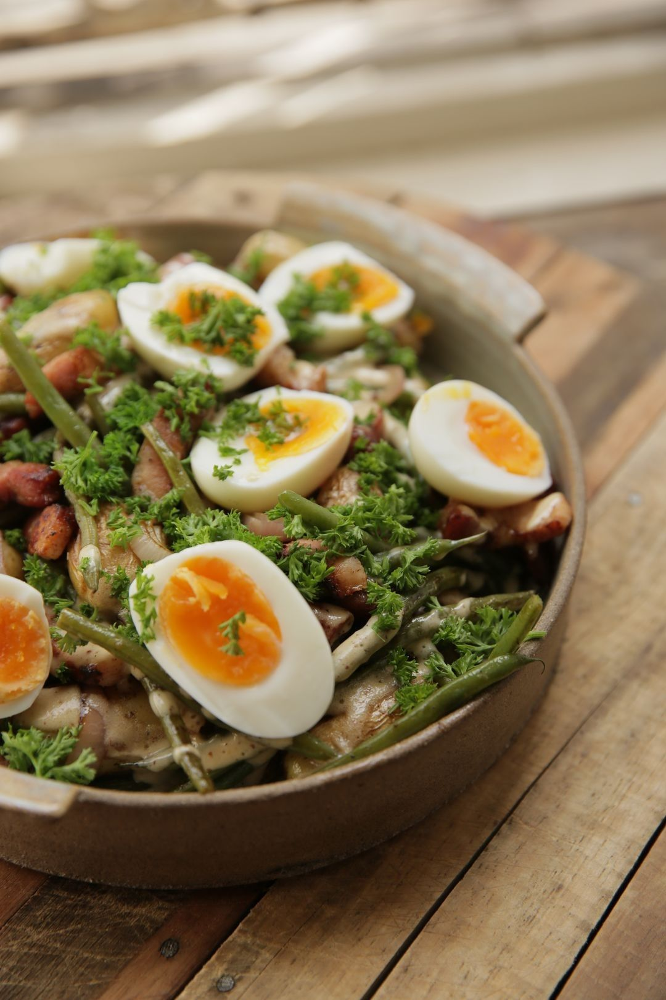

Luikse salade
Home

Description
Ook over de taalgrens kennen ze hun klassiekers. Deze Luikse salade is daar een mooi voorbeeld van. Met enkele eenvoudige ingrediënten zet je in geen tijd een volwaardige maaltijd op tafel die jong en oud zal smaken.
Ingredients (4pers)
- 500g aardappelen
- 300g sperzieboontjes
- 2 sjalotten
- 300g vegetarische kipstukjes
- 4 eieren
- 1 scheutje natuurazijn
- 2 el ciderazijn
- Peper
- Zout
- 1 klontje boter
- 1 el graanmosterd
- 4 el olijfolie
- peterselie
- 1 snuifje grof zuit
Stappen
De Luikse salade
- Breng twee potten met water aan de kook. Doe in beide een snuifje zout.
- Maak de aardappelen schoon en kook ze gaar in de schil.
- Nijp de topjes van de sperziebonen en was de groente.
- Zodra het water in de tweede pot kookt, gaar je daarin de boontjes tot ze beetgaar zijn. (Proef regelmatig even een boon om te controleren of ze gaar zijn.)
- Spoel de beetgare boontjes onder koud stromend water.
- Breng nog een derde potje met water aan de kook en kook daarin de eieren gedurende 8 minuten. Zo blijft de dooier smeuïg. Koel de eitjes nadien onder koud stromend water.
- Pel de sjalotten en snipper ze in fijne stukjes.
- Snij het zwoerd van de lapjes spek en verwijder (indien nodig) het stukje kraakbeen. Snij het spek in fijne reepjes of blokjes.
- Smelt een klontje boter in een (hoge) pan en stoof daarin de stukjes sjalot, samen met het spek. Roer regelmatig even in de pan.
- Zodra de spekjes licht gebakken zijn, voeg je de boontjes toe aan de pan. Kruid met wat peper van de molen en eventueel een snuifje zout. Voeg ook een klein scheutje azijn toe.
De vinaigrette
- Voeg in een mengschaaltje de mosterd, de ciderazijn en de olijfolie samen.
- Roer alles met een garde tot een gebonden vinaigrette. Kruid met wat peper van de molen en een snuifje zout.
Afwerking
- Snij de gekookte aardappels in schijfjes of blokjes.
- Meng de stukjes aardappel met de boontjes en het spek.
- Schenk wat vinaigrette over de mengeling.
- Hak de peterselie fijn, strooi de groene snippers over de salade en roer alles nog even om.
- Pel de (bijna) hardgekookte eitjes en snij ze in helften. Schik de eitjes op de schotel.
- Strooi een snuifje fleur de sel over de eitjes en serveer de lauwe salade.